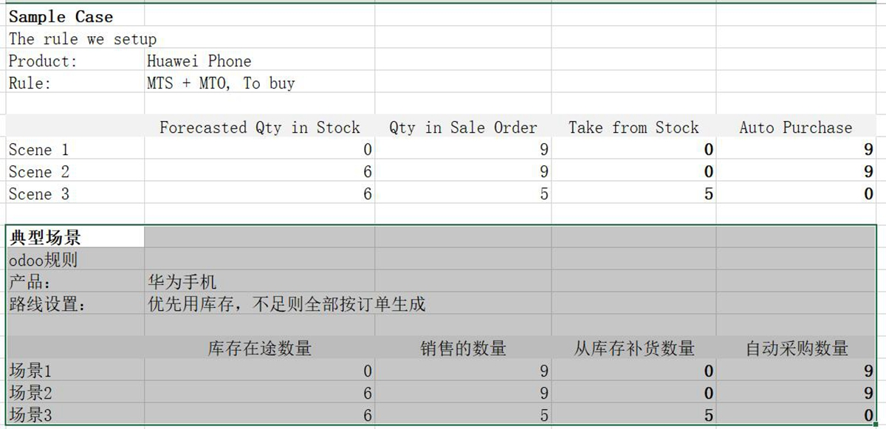
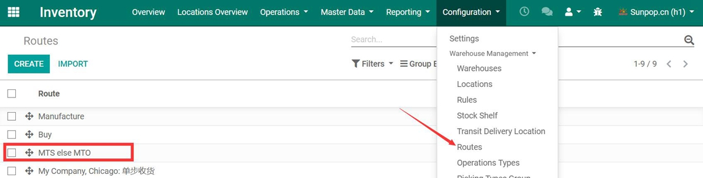
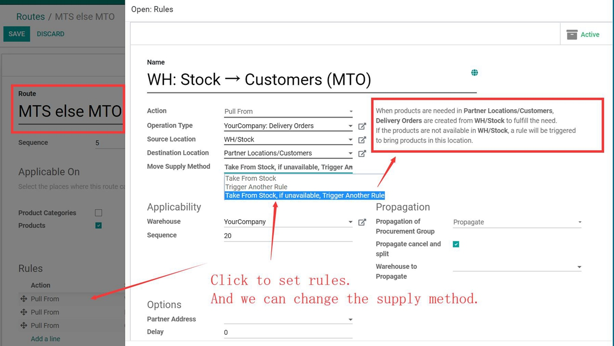
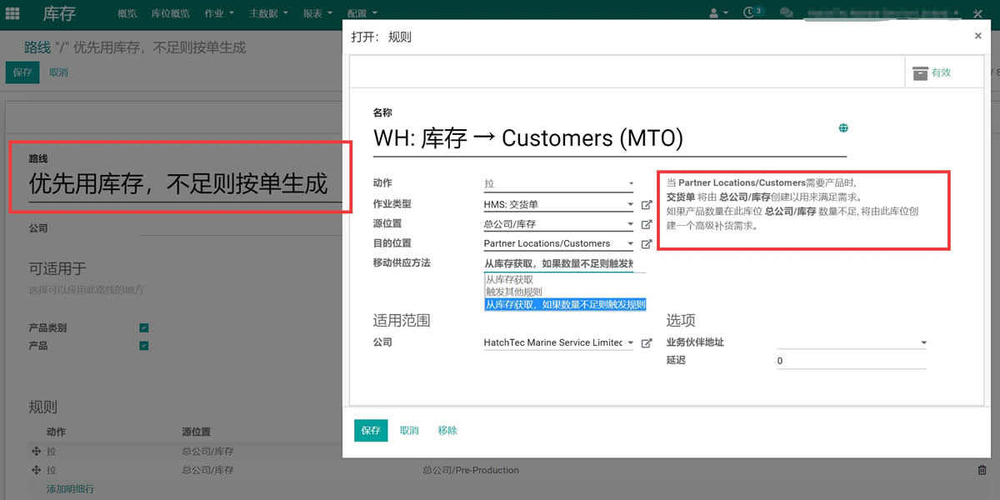
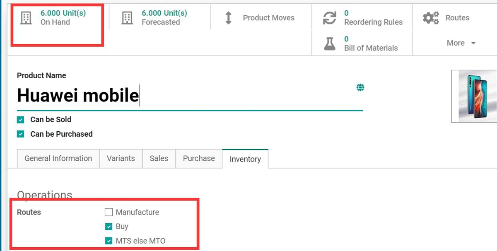
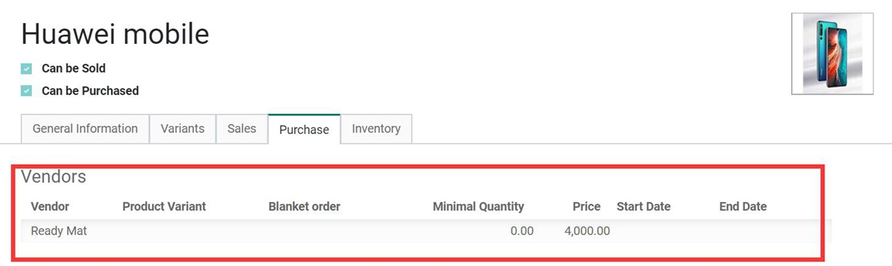
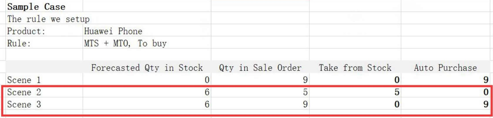
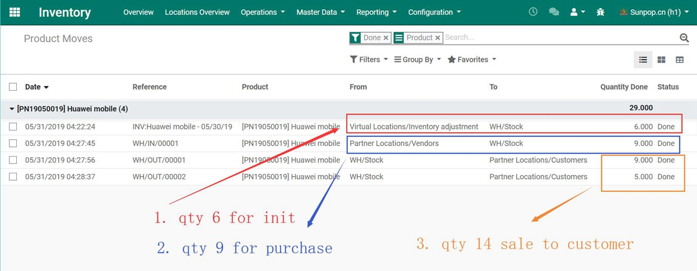

MTS else MTO, Stock enough MTS else MTO procurement
Product Take From Stock, if unavailable in forecasted, Trigger Another Rule like MTO make to order.
Easy to setup. But please prepare your odoo stock rule knowledge by yourself.
Lastest update: v12.19.05.31

Key features:
-
Support 3 way for product pull rule.
-
1. MTS,Take From Stock: the products will be taken from the available stock of the source location.
-
2. MTO,Trigger Another Rule: the system will try to find a stock rule to bring the products in the source location. The available stock will be ignored.
-
3. MTS+MTO,Take From Stock, if Forecasted Qty Unavailable, Trigger Another Rule: the products will be taken from the available stock of the source location.If there is no stock available, the system will try to find a rule to bring the products in the source location.
-
MTS + MTO and other rule can use in purchase or manufacture order.
-
Multi-language Support.
-
Multi-Company Support.
How to use, Just click to install
1. After install, you would get [MTS else MTO] rule replace for [Make to Order] rule

2. Also you can create your own rule just set [Move supply method] to [Take From Stock, if unavaiable, Trigger Another Rule], Normally

3. Multi language and multi company support

Then you can use MTS else MTO rule like normal odoo stock rule. In sample case
Set sku to [Buy] and [MTS else MTO], and update Qty on hand

Set vendor to purchase

And let's try do the sample case, Finish Scene 2 first, Then finish Scene 3
Sample Case we check

Finally Get what we need
